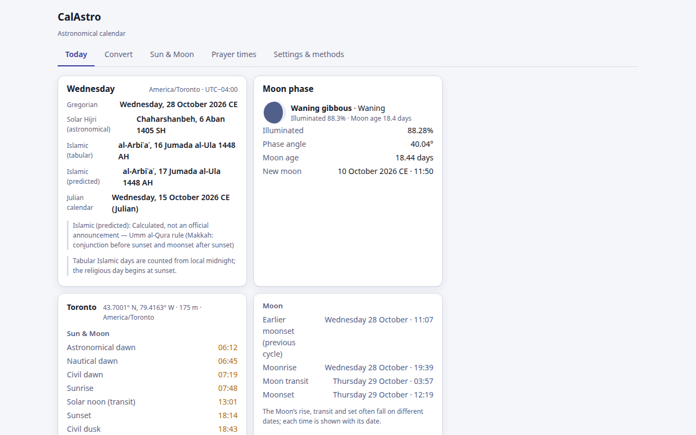
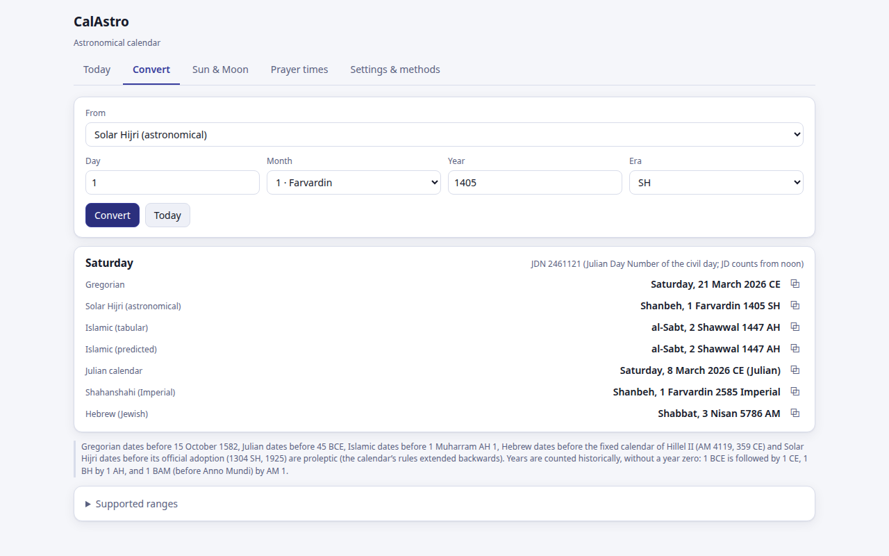
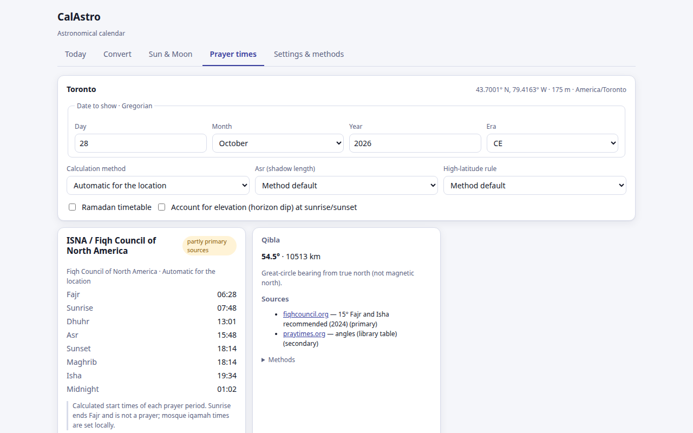
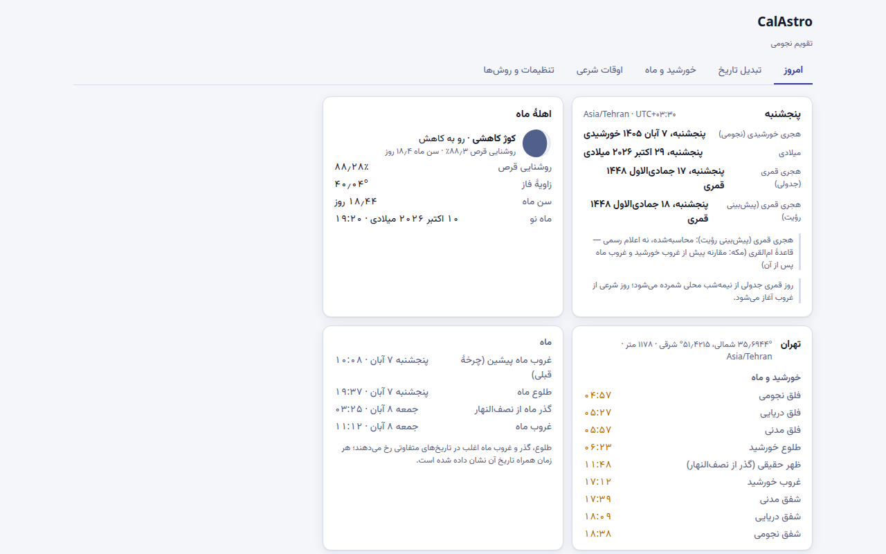

What CalAstro does
Calendar conversion
Gregorian, Julian, astronomical Solar Hijri (official Calendar Center rule), Shahanshahi, tabular Islamic, predicted Islamic (Umm al-Qura rule, or Yallop or Odeh crescent visibility) and Hebrew (Jewish). Sun and Moon from 5001 BCE to 5000 CE.
Sun and Moon
Rise, set and meridian transit; civil, nautical and astronomical twilight for your local day, including polar day and night.
Moon phase
Illumination, phase angle, waxing or waning, named phase and lunar age since the last new moon.
Prayer times
18 calculation methods with their sources shown, Asr schools, high-latitude rules, Ramadan timetables and the Qibla bearing on the WGS84 ellipsoid.
English and Persian
Right-to-left layout, Persian or Latin numerals, light and dark themes, keyboard and screen-reader friendly.
Private and offline
No account, no analytics, no server. Calculations run on your device from the JPL DE442/DE441 ephemeris, downloaded once (about 223 MB for 1–3000 CE, more only if you look up earlier or later dates; checksum-verified) and then used offline.




Accuracy you can check
| Quantity | Independent reference | Agreement |
|---|---|---|
| Sun and Moon positions (1000 epochs, 4 sites) | NASA NAIF SPICE, ITRF93 Earth model | 0.009″ |
| Rise, set, transit, twilight (126 events) | US Naval Observatory | same minute in every case |
| Solar Hijri year starts, 1206–1498 SH | University of Tehran Calendar Center | 293 of 293 years |
| Umm al-Qura months, 1423–1450 AH | KACST official table | 335 of 336 months |
| Prayer times, İstanbul, 403 days | Diyanet timetable | Fajr–Asr within ±1 min |
Displayed times are rounded to the minute; real atmospheric refraction can change sunrise and sunset by more. Calculated Islamic dates and crescent predictions are calculations, not official announcements. Methods · Validation